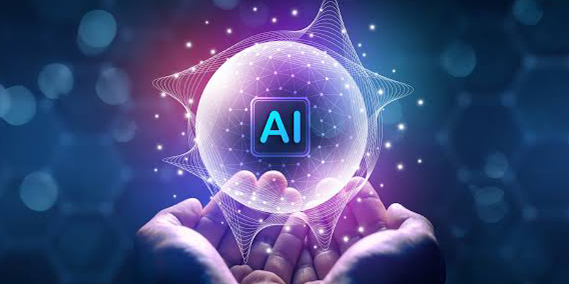
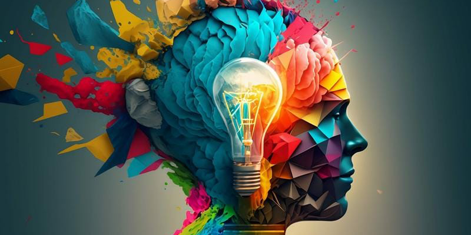

.jpeg)
AI Content Creator — สร้างเนื้อหาอย่างสร้างสรรค์

เมื่อมีไอเดียแล้ว ขั้นตอนต่อไปคือการเปลี่ยนความคิดให้กลายเป็นเนื้อหาที่สามารถสื่อสารกับผู้ชมได้ AI สามารถช่วยสร้างและพัฒนาเนื้อหาได้หลากหลายรูปแบบ ตั้งแต่บทความ แคปชัน โฆษณา สคริปต์วิดีโอ เรื่องเล่า ไปจนถึงเนื้อหาสำหรับ Social Media การสร้างคอนเทนต์ด้วย AI ไม่ใช่เพียงการสั่งว่า “เขียนบทความให้หน่อย” แต่ควรระบุรายละเอียดให้ชัดเจน เช่น ต้องการสื่อสารกับใคร มีวัตถุประสงค์อะไร ต้องการใช้ภาษาแบบไหน และต้องการให้ผู้อ่านเกิดความรู้สึกหรือดำเนินการอย่างไร ตัวอย่างเช่น หากต้องการสร้างโพสต์ประชาสัมพันธ์กิจกรรม สามารถให้ AI ช่วยคิดหัวข้อที่น่าสนใจ เขียนข้อความเปิดเรื่อง สรุปข้อมูลสำคัญ และสร้าง Call to Action ที่กระตุ้นให้ผู้ชมสนใจหรือเข้าร่วมกิจกรรม

นอกจากนี้ AI ยังสามารถช่วยปรับเนื้อหาเดิมให้เหมาะกับแพลตฟอร์มต่าง ๆ เช่น เปลี่ยนบทความยาวให้เป็นโพสต์ Facebook สร้างแคปชันสำหรับ Instagram หรือเปลี่ยนเนื้อหาเป็นสคริปต์สำหรับ TikTok หัวใจสำคัญคือ AI ช่วยสร้างเนื้อหา แต่ผู้สร้างยังเป็นผู้กำหนดทิศทาง เพราะเนื้อหาที่ดีไม่ได้เกิดจากคำสวย ๆ เพียงอย่างเดียว แต่ต้องเข้าใจผู้ชมและมีเป้าหมายในการสื่อสารอย่างชัดเจน สิ่งที่จะได้เรียนรู้ การสร้าง Content ด้วย AI การเขียนบทความและแคปชัน การสร้างสคริปต์วิดีโอ การปรับ Content ให้เหมาะกับแต่ละแพลตฟอร์ม การสร้างเนื้อหาให้ตรงกลุ่มเป้าหมาย
back